Social cut
0:271080 × 192060 fpsTikTok · Reels · Shorts
Every one of the 60 frames a second is a real render of the app. Add a trending sound in the app you post from; the cut has no audio on purpose.
Two cuts, both recorded from the real app running a real verdict. The social cut has the hook, captions and end card. The app capture is clean footage for the App Store preview.
Evenly spaced across the social cut, about every 0.46 seconds. Each is a full 1080 × 1920 still: tap one to open it at full size, then save it from there. Use them for thumbnails, a storyboard, or carousel posts.
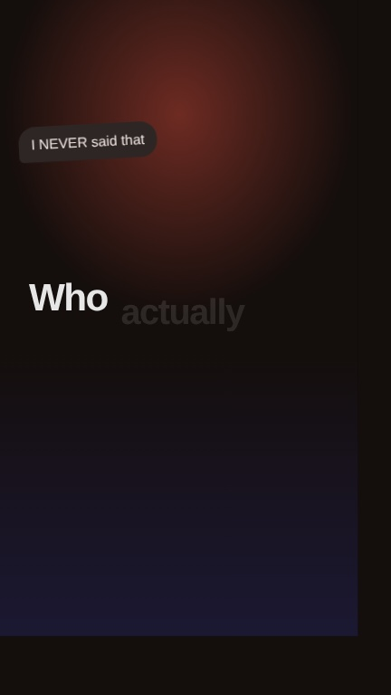
02 0:00.45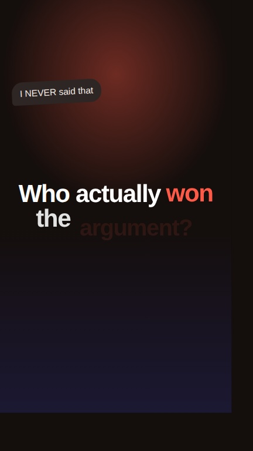
03 0:00.90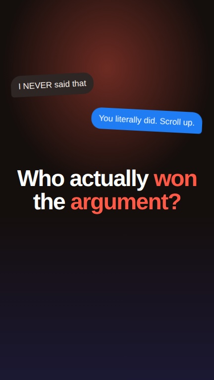
04 0:01.35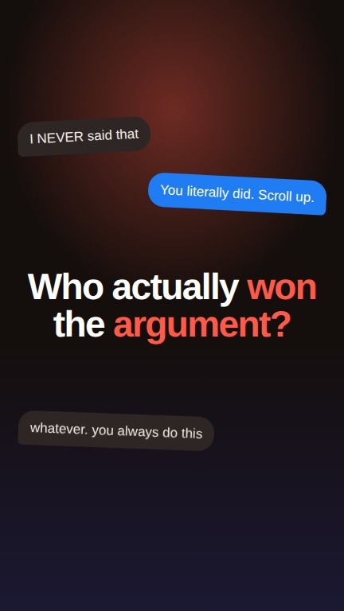
05 0:01.80 06 0:02.26
06 0:02.26 07 0:02.71
07 0:02.71 09 0:03.61
09 0:03.61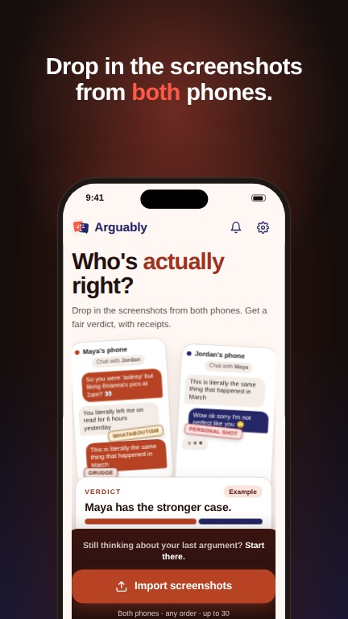
10 0:04.06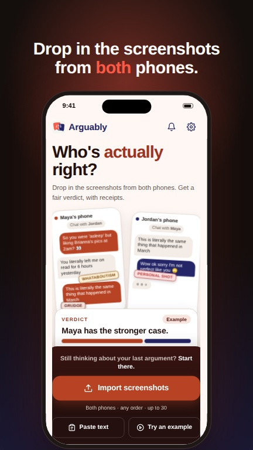
11 0:04.51 12 0:04.96
12 0:04.96 13 0:05.41
13 0:05.41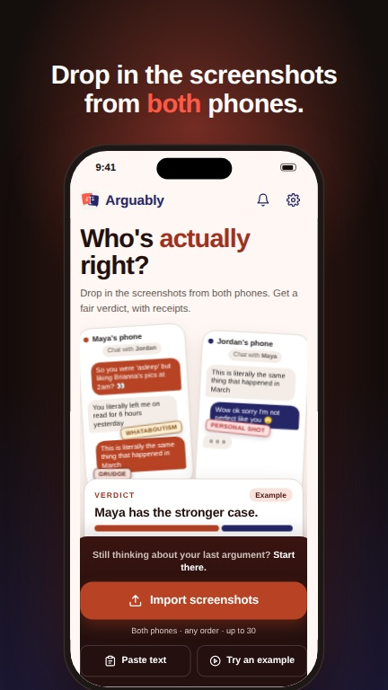
14 0:05.86 15 0:06.32
15 0:06.32 16 0:06.77
16 0:06.77 17 0:07.22
17 0:07.22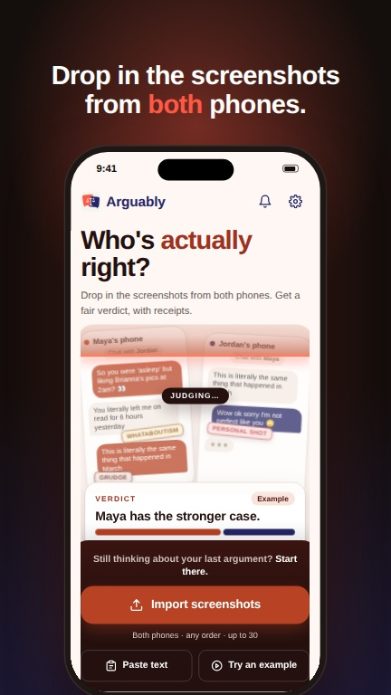
18 0:07.67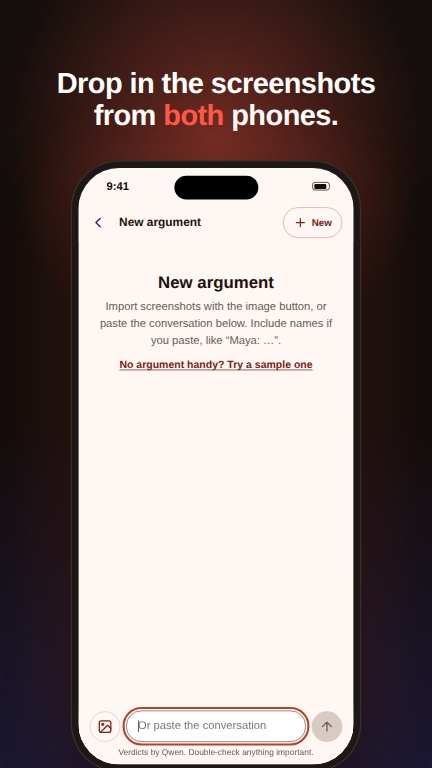
19 0:08.12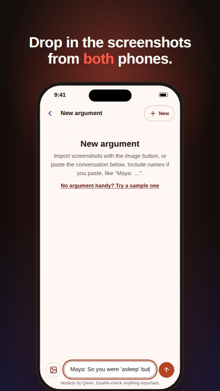
21 0:09.02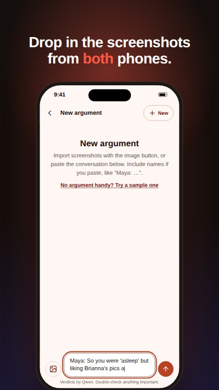
22 0:09.47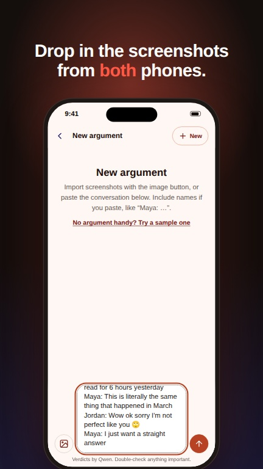
23 0:09.93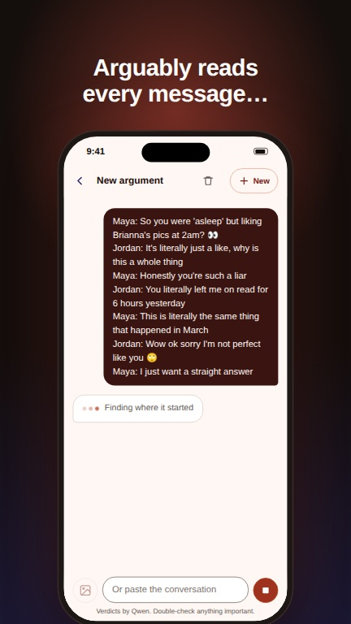
29 0:12.63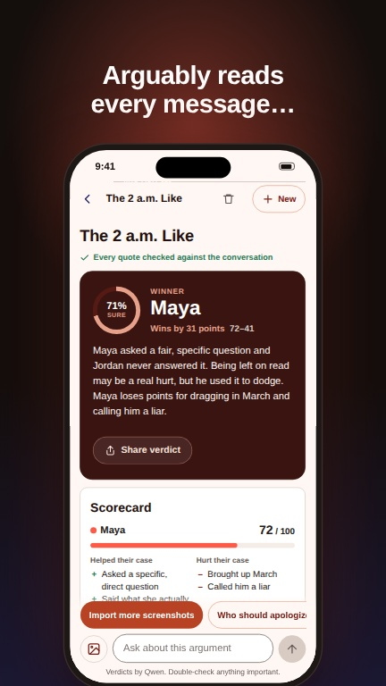
32 0:13.99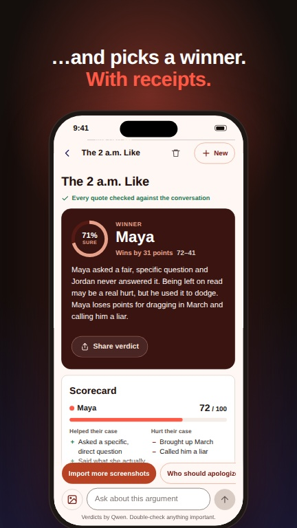
33 0:14.44 34 0:14.89
34 0:14.89 35 0:15.34
35 0:15.34 36 0:15.79
36 0:15.79 37 0:16.24
37 0:16.24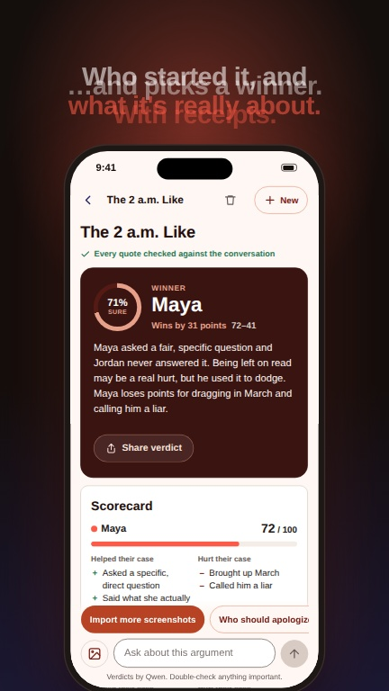
38 0:16.69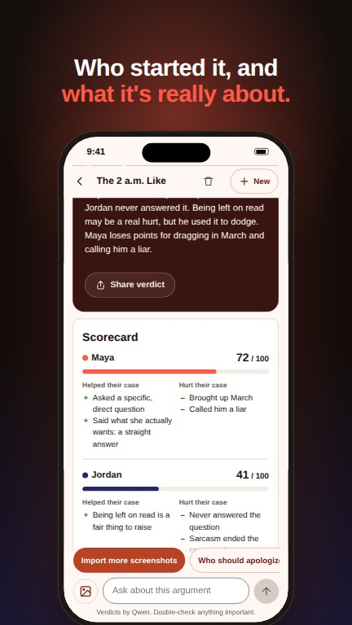
39 0:17.14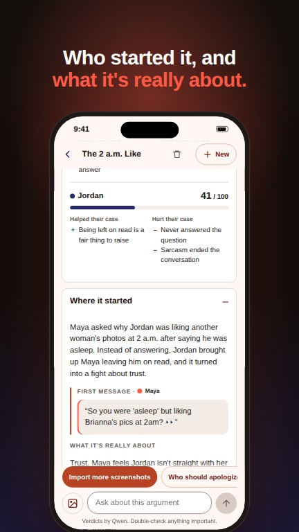
40 0:17.59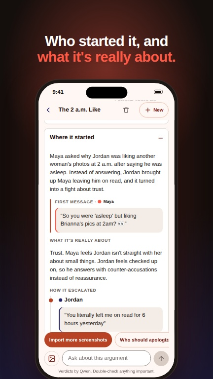
41 0:18.05 42 0:18.50
42 0:18.50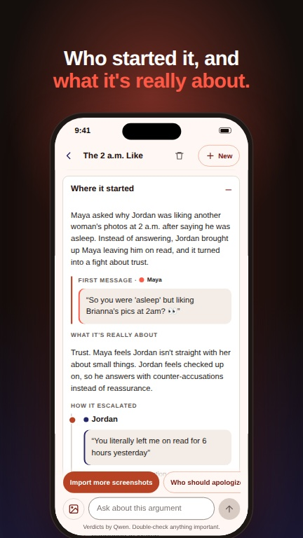
43 0:18.95 44 0:19.40
44 0:19.40 45 0:19.85
45 0:19.85 46 0:20.30
46 0:20.30 47 0:20.75
47 0:20.75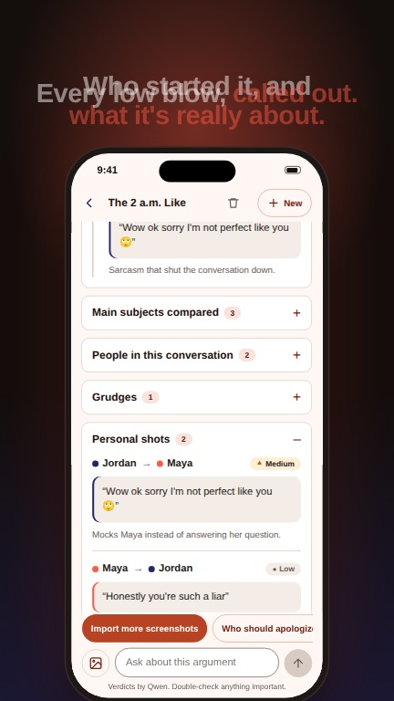
48 0:21.20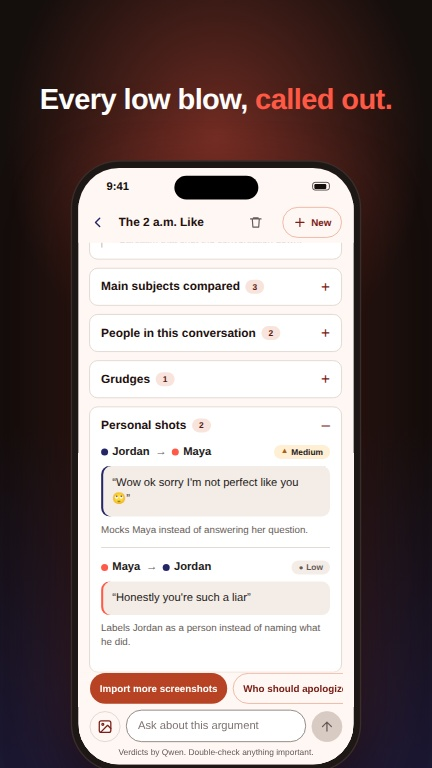
49 0:21.65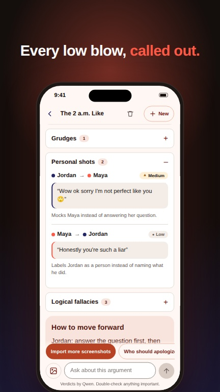
50 0:22.11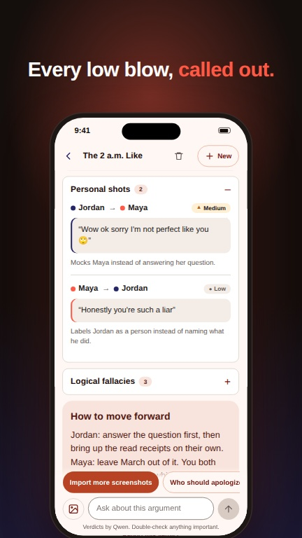
51 0:22.56 52 0:23.01
52 0:23.01 53 0:23.46
53 0:23.46 54 0:23.91
54 0:23.91 55 0:24.36
55 0:24.36 56 0:24.81
56 0:24.81 57 0:25.26
57 0:25.26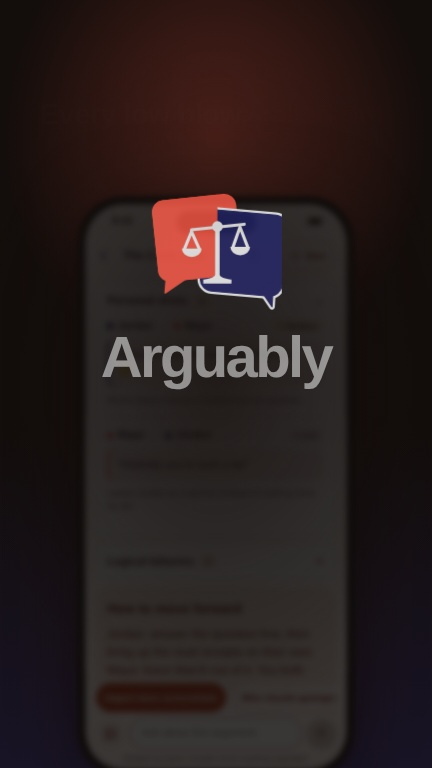
58 0:25.72These files are WebM. TikTok and CapCut open them as they are. For the others, convert on your Mac:
ffmpeg -i arguably-promo.webm -f lavfi -i anullsrc=r=48000:cl=stereo -shortest -c:v libx264 -pix_fmt yuv420p -crf 18 -c:a aac -b:a 256k arguably-promo.mp4
For 6.9" iPhones, convert the app capture the same way and add -vf scale=886:1920. Apple wants 15–30 seconds, 30 fps, and an audio track; the silent track in the command counts.
In the repo under arguably/promo/. Run node scripts/make-promo.cjs (add --clean for the app capture) to render them again after the app changes.